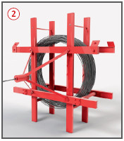
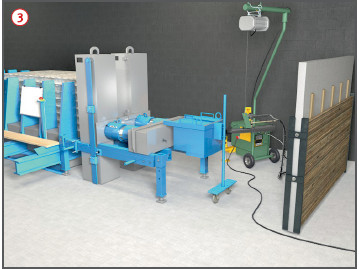
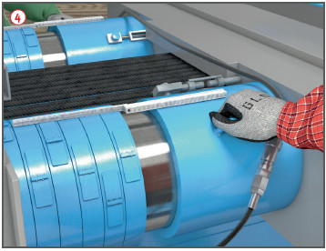

Unkontrollierte Bewegungen der Spanndrähte, z. B. Durchrutschen von Spanndrähten oder unkontrollierte Bewegungen der Spannvorrichtung, beim Spannen und Entspannen können zu schweren Verletzungen führen.
Allgemeines
Zusätzliche Angaben in den Bewehrungsplänen beachten, und zwar:
Reihenfolge des Einbaues der Betonbewehrung und der Spannglieder,
Lage von Betonieröffnungen und Rüttelgassen,
Konstruktion, Lage und Befestigung der Montageböcke und Trageisen zum Fixieren der Spannglieder,
Sicherung von Betonkanten, an denen Spannglieder verankert oder gekrümmte Spannglieder dicht vorbeilaufen,
Abstände der Verankerungspunkte untereinander, zu Hüllrohren und zu freien Betonrändern.
Schutzmaßnahmen
Spann-Nischen so ausbilden, dass die Spannpresse ohne Quetschgefahr für das Bedienungspersonal aufgesetzt, bedient und vom gespannten Stahl wieder abgenommen werden kann .
Spannglieder vor dem Einbau auf mechanische Beschädigungen überprüfen. Stähle mit Kerben, Rostnarben usw. aussondern.
Spannglieder vor Feuchtigkeit und Chemikalien geschützt lagern und einbauen. Evtl. anhaftende Öle und Fette entfernen.
Bei Arbeiten an scharfen Stahlteilen, z. B. Hüllrohren und Spannstählen, Schutzhandschuhe tragen.
Zusätzliche Hinweise zu Transport/Lagerung
Beim Be- und Entladen sowie beim Transport von ausgerollten Spanngliedern auf der Baustelle Traversen benutzen, um Biegungen zu vermeiden.
Zulässige Spannstahlradien (Biegeradien) nicht unterschreiten.
Zum Anschlagen von Litzencoils möglichst Faserseile (keine Baumwoll- und Polyäthylenseile) oder Textilhebebänder verwenden. Bei Verwendung von Stahlseilen Kantenschoner verwenden.
Beim Verladen von aufgetrommelten Fertigspanngliedern geeignete Lastaufnahmemittel verwenden.
Spannstahltrommeln gegen Umfallen und Wegrollen gesichert lagern.
Zum Transport von Spannstahl in Hüllrohren Gurte oder Bandseile benutzen, damit Hüllrohre nicht eingedrückt werden.
Zusätzliche Hinweise zum Vorspannen mit Spannverfahren
Einlegen der Spannglieder nur mit Hilfseinrichtungen wie Trommeln, Traversen oder Rollen vornehmen.
Kein Aufenthalt hinter den Spanngliedern, während des Vorspann- bzw. Spannvorganges, und zwischen Spanngliedern.
Hüll- und Entlüftungsrohre vor dem Verpressen kontrollieren und säubern.
Freie Spannstahlüberlänge auf die zum Ansetzen der Presse geforderte Mindestüberlänge beschränken.
Arbeitsplätze mit solcher Mindesttiefe vorsehen, dass die Presse gefahrlos aufgesetzt werden kann und bestehende Absturzsicherungen verbleiben können.
Beim Verpressen maximal zulässigen Einpressdruck beachten.
Zusätzliche Hinweise zum Vorspannen im Spannbett
Beim Abtrommeln von der Spanndrahtrolle Ausschlagen des Spanndrahtendes durch Schutzeinrichtungen verhindern .

Die Geräte zum mechanischen Einschieben der Spanndrähte müssen mit einer Totmannschaltung ausgerüstet sein. Spanndrahtspitzen während des Einschiebens mit Schutzkappe abdecken.
Vor dem Spannen ist darauf zu achten, dass die Spannglieder zentrisch, auf die Quer- und Längsachse der Spannbahn bezogen, durch die Querlochplatte eingelegt und dann gespannt werden.
Während des Vorspannes sind hinter der Spannvorrichtung und dem Widerlager ausreichend dimensionierte Fangwände oder Auffangkästen anzuordnen . Des Weiteren ist der Aufenthalt hinter Spannvorrichtungen, Widerlagern und zwischen Spanngliedern während des Vorspannes untersagt!

Freiliegende, gespannte Spannglieder gegen seitliches Ausschlagen bei Spanngliedbruch sichern.
Spannglieder nur im spannungslosen Zustand trennen.
Zusätzliche Hinweise beim Entspannen im Spannbett
Beim Entspannen ist darauf zu achten, dass die Hydraulikzylinder gleichmäßig zurückgefahren werden und dass die Abstützschalen nach und nach herausgenommen werden .

Prüfungen
Art, Umfang und Fristen erforderlicher Prüfungen festlegen (Gefährdungsbeurteilung) und einhalten, z. B. Spannvorrichtungen 1/2-jährlich durch eine "zur Prüfung befähigte Person" (z. B. Sachkundiger).